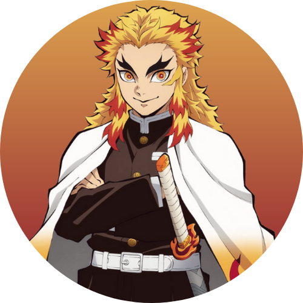

Selecione um personagem
- 
-

Tanjiro Kamado
Tanjiro utiliza uma katana solar de cor preta e a técnica de Respiração da Água juntamente com uma técnica ancestral de sua família, a Hinokami Kagura. Seu crânio é extremamente duro, o que o permite utilizar sua cabeça para golpear oponentes. Tanjiro ainda possui um olfato extremamente aguçado, fazendo com que ele possa detectar a presença de demônios e até mesmo as emoções das pessoas.